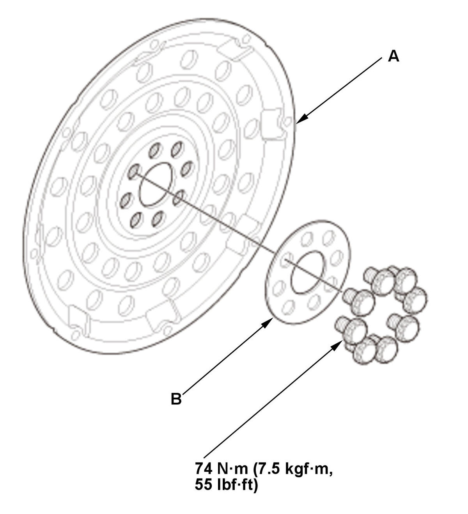

Removal and Installation
- Transmission - Remove
- Drive Plate - Remove

Courtesy of HONDA, U.S.A., INC.1. Remove the drive plate (A) with the washer (B). - All Removed Parts - Install
1. Install the parts in the reverse order of removal.
NOTE: Tighten eight bolts in a crisscross pattern in at least two steps.